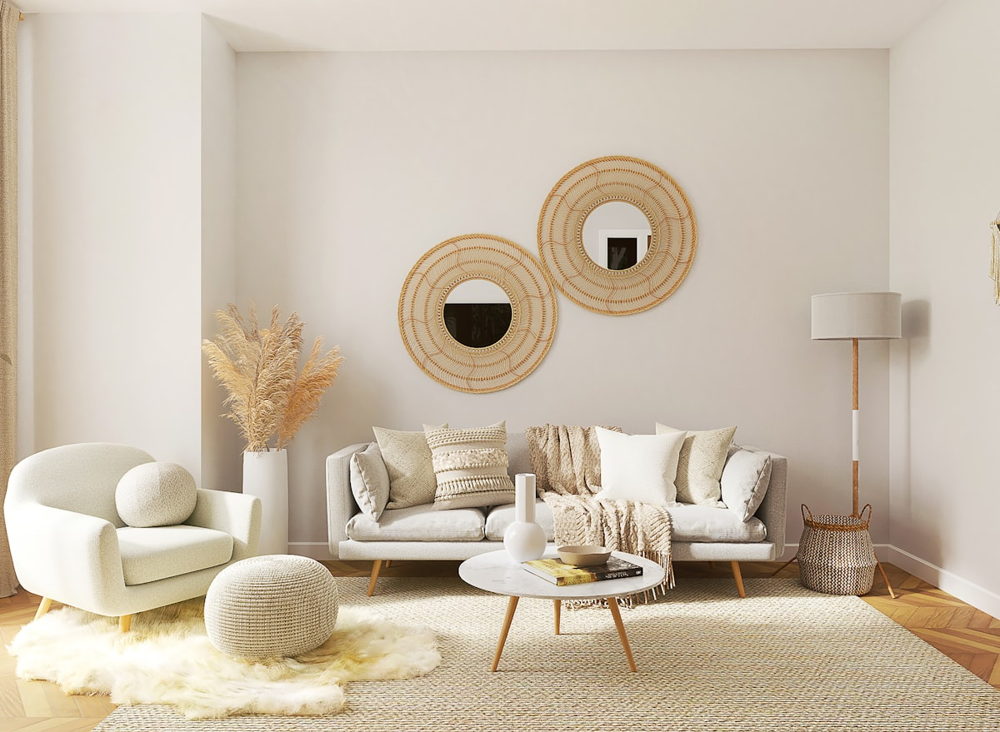

Wenn Sie jemals überlegt haben, wo Sie Wurzeln schlagen oder Immobilien kaufen sollten, dann schnappen Sie sich einen Kaffee (gern auch eine sächsische Eierschecke dazu) und lehnen Sie sich zurück – denn wir nehmen Sie mit in eine Gemeinde, die mehr zu bieten hat als nur schöne Aussichten: Bannewitz – charmant gelegen, überraschend vielfältig und ein echter Geheimtipp für Wohnträume und Immobilien-Investments gleichermaßen.
-
Allgemeine Informationen
-
Einwohnerzahl: 11.142 (Stand: 31. Dezember 2022)
-
Fläche: ca. 25,8 km²
-
Bevölkerungsdichte: etwa 432 Einwohner pro km²
-
Höhe: 221 m über dem Meeresspiegel
-
Postleitzahl: 01728
-
Bürgermeister: Heiko Wersig (seit 1. April 2022)
Geografische Lage & Gliederung
Bannewitz liegt etwa 7 km südlich des Dresdner Stadtzentrums und grenzt direkt an die Landeshauptstadt. Die Gemeinde besteht aus vier Ortschaften mit insgesamt 12 Ortsteilen
-
Bannewitz: Bannewitz, Boderitz, Cunnersdorf, Welschhufe
-
Possendorf: Börnchen, Possendorf, Wilmsdorf
-
Rippien: Hänichen, Rippien
-
Goppeln: Goppeln, Golberode, Gaustritz
Geschichte
-
Die erste urkundliche Erwähnung von Bannewitz stammt aus dem Jahr 1311 unter dem Namen „Panewycz“.
-
Im Jahr 1999 fusionierten die Gemeinden Bannewitz und Possendorf. Dabei wurde der Ortsteil Kauscha nach Dresden eingemeindet.
-
Seit 2008 gehört Bannewitz zum Landkreis Sächsische Schweiz-Osterzgebirge.
Sehenswürdigkeiten & Kultur
-
Marienschacht: Ein technisches Denkmal mit dem letzten erhaltenen Malakowturm Ostdeutschlands. Heute beherbergt es ein Bergbau- und Regionalmuseum.
-
Schloss Nöthnitz: Ein Renaissanceschloss aus dem 17. Jahrhundert, das einst die Bibliothek von Heinrich Graf von Bünau beherbergte.
-
Bannewitzer Kirche: Ursprünglich 1864 als Schule erbaut, wurde sie 1885 um einen Kirchturm ergänzt – ein in Sachsen einzigartiges Bauwerk.
-
Possendorfer Kirche: Mit einem 57 Meter hohen Turm, dessen Grundmauern aus dem Jahr 1521 stammen.
-
-
Freizeit & Natur
-
Wanderwege: Bannewitz bietet zahlreiche Wander- und Radwege, darunter Strecken entlang ehemaliger Grubenbahnen, die durch malerische Landschaften führen.
-
Parks: Der Schlosspark Nöthnitz und der Lunapark bieten Erholung und schöne Ausblicke über das Elbtal bis hin zur Sächsischen Schweiz
Bildung & Infrastruktur
-
Bildungseinrichtungen:
-
Grundschule Possendorf
-
Grund- und Oberschule Bannewitz
-
Musik-, Tanz- und Kunstschule Bannewitz
-
Musikschule Bannewitz (KulturTankstelle)
-
-
Verkehrsanbindung:
-
Die Bundesstraße B170 durchquert die Gemeinde und verbindet sie mit Dresden.
-
Die Autobahn A17 ist über die Anschlussstelle Dresden-Südvorstadt erreichbar.
-
-
Bannewitz – Wo Dresden ganz nah ist, aber die Ruhe wohnt
Gerade einmal sieben Kilometer südlich vom Dresdner Stadtzentrum liegt Bannewitz – eine Gemeinde, die sich anfühlt wie das gute alte „Best of Both Worlds“-Mixtape: stadtnah und doch angenehm entschleunigt. Hier grüßt man sich noch auf der Straße, die Bäckerin kennt Ihren Lieblingskuchen, und trotzdem sind Sie in wenigen Minuten auf der A17 oder der B170 – und damit mitten in der sächsischen Landeshauptstadt. Das ist nicht nur ideal für Pendler, sondern auch ein starkes Argument für alle, die darüber nachdenken, ihre Immobilie zu verkaufen. Denn: Der Dresdner Speckgürtel ist gefragt – und Bannewitz ist mittendrin statt nur dabei.
Ein Ort mit Charakter und Ortsteilen mit Geschichten
Bannewitz ist nicht einfach nur Bannewitz. Die Gemeinde ist ein kleines Mosaik aus insgesamt 12 Ortsteilen, die sich auf die vier Ortschaften Bannewitz, Possendorf, Rippien und Goppeln verteilen. Jeder dieser Orte hat seinen ganz eigenen Charme. In Possendorf zum Beispiel weht Ihnen ein Hauch Historie um die Nase – hier steht die imposante Kirche mit 57 Meter hohem Turm, der schon seit 1521 die Nachbarschaft überblickt. In Rippien trifft ländliche Gemütlichkeit auf gute Infrastruktur. Und Goppeln? Goppeln ist für viele der kleine Geheimtipp – nicht zuletzt durch die Nähe zu Dresden-Nickern und seine ruhige, grüne Lage.
Wenn Sie also gerade denken: „Ich habe da noch ein Häuschen geerbt – ob das jemand kaufen will?“ Dann lautet die Antwort: Wahrscheinlich ja. Und zwar schneller, als Sie denken.
Natur, Kultur und eine Prise Bergbau
Klingt erstmal nach einer gewagten Mischung? Ist es auch – aber genau das macht Bannewitz so besonders. Die Gemeinde war mal ein aktives Bergbaugebiet. Der Marienschacht in Bannewitz ist ein technisches Denkmal mit dem letzten erhaltenen Malakowturm in Ostdeutschland. Heute befindet sich dort ein kleines Museum, das bei einem Spaziergang interessante Einblicke in die regionale Bergbaugeschichte bietet.
Falls Sie sich, wie ich fragen, was ein Malakowturm ist:
Herkunft des Namens:
Der Begriff „Malakowturm“ stammt von der Festung Malakow auf der Halbinsel Krim, die während des Krimkriegs (1853–1856) durch ihre massive Bauweise bekannt wurde. Der Baustil des Turms erinnerte an diese Festung, daher übertrug man den Namen auf die ähnlich robusten Förderturm-Konstruktionen.
Merkmale:
-
Bauweise: aus Ziegeln oder Naturstein, im Gegensatz zu späteren Stahlkonstruktionen
-
Funktion: trug die Fördereinrichtungen (Seilführung, Antrieb) für den Schachtbetrieb
-
Nutzung: häufig auch als Zugang zu Maschinenräumen, Werkstätten oder Verwaltung
-
Erscheinungsbild: meist rechteckiger Grundriss, sehr massiv, mit wenigen Fenstern und dekorativen Elementen
Bedeutung:
Malakowtürme wurden vor allem in der Mitte des 19. Jahrhunderts gebaut, als der Bergbau expandierte und stabilere Bauten für tiefere Schächte erforderlich waren. Heute sind sie selten und gelten als Industriedenkmal, weil nur wenige erhalten geblieben sind.
Der Malakowturm im Marienschacht Bannewitz ist ein Beispiel für diese Bauform – und der letzte seiner Art in Ostdeutschland.
Auch ein Besuch des Schlosses Nöthnitz lohnt sich. Das Gebäude, ein Herrenhaus mit barocken und klassizistischen Elementen, hat eine lange Geschichte und war im 18. Jahrhundert ein Zentrum geistigen Lebens. Besonders bekannt wurde es durch Heinrich Graf von Bünau, der das Schloss 1739 erwarb.
Bünau war ein bedeutender Historiker und Staatsmann, der auf Schloss Nöthnitz eine der größten privaten Bibliotheken seiner Zeit unterbrachte – mit über 42.000 Bänden. Diese Sammlung umfasste Werke aus den Bereichen Geschichte, Philosophie, Theologie, Literatur und Naturwissenschaften.
Ein weiterer bedeutender Name, der mit dem Schloss verbunden ist, ist Johann Joachim Winckelmann. Er arbeitete dort von 1748 bis 1754 als Bibliothekar. Winckelmann gilt heute als Begründer der klassischen Archäologie und Kunstgeschichte. Seine Zeit in Nöthnitz prägte seine wissenschaftliche Entwicklung entscheidend.
Nach dem Tod Bünaus wurde die Bibliothek verkauft; sie bildete später den Grundstock der heutigen Sächsischen Landesbibliothek – Staats- und Universitätsbibliothek Dresden (SLUB).
Das Schloss selbst ist heute nicht durchgängig öffentlich zugänglich, aber seine Geschichte und Rolle als kultureller Ort machen es zu einem wichtigen Teil der regionalen Identität. Es zeigt, dass Bannewitz schon im 18. Jahrhundert ein Anziehungspunkt für Gelehrte und gebildete Kreise war. Der Verein Freunde Schloss Nöthnitz e.V. engagiert sich seit seiner Gründung im Jahr 2019 für den Erhalt, die kulturelle Belebung und die öffentliche Zugänglichkeit von Schloss Nöthnitz in Bannewitz. Hier lang.
Dieser Charakter prägt die Gemeinde bis heute: Wer hier lebt oder investiert, schätzt eine ruhige Umgebung, Nähe zur Natur und eine gewisse Lebensqualität. Für Eigentümer bedeutet das: Immobilien in Bannewitz sprechen Menschen an, die klare Vorstellungen haben – und bereit sind, für ein passendes Zuhause einen angemessenen Preis zu zahlen.
Warum Bannewitz (auch wirtschaftlich) so spannend ist
Bannewitz überzeugt nicht nur mit hoher Lebensqualität, sondern auch mit wirtschaftlicher Substanz. Die Nähe zur Landeshauptstadt Dresden, die hervorragende Anbindung über die A17 und B170 sowie eine lebendige Unternehmenslandschaft machen die Gemeinde zu einem attraktiven Standort im Dresdner Speckgürtel.
Ein Beispiel dafür ist die Kompressorenbau Bannewitz GmbH (KBB) – ein international tätiges Unternehmen, das seit über 70 Jahren Hochleistungs-Turbolader für Schiffe, Lokomotiven und Industrieanwendungen entwickelt. Solche „Hidden Champions“ stehen stellvertretend für die starke industrielle Basis der Region.
Auch im Einzelhandel setzt Bannewitz Zeichen: Mit dem neuen Simmel-Markt ist ein modernes Nahversorgungszentrum entstanden, das nicht nur mit einem breiten Sortiment punktet, sondern auch Arbeitsplätze schafft und die Infrastruktur vor Ort stärkt.
Ein weiteres Beispiel ist das Bauzentrum Mobau Müller, ein traditionsreicher Baustoffhändler mit regionaler Strahlkraft, der Bauprojekte in ganz Ostsachsen beliefert und gleichzeitig in nachhaltige Energielösungen am Standort investiert.
Neben etablierten Mittelständlern sind in Bannewitz auch viele Handwerksbetriebe, Dienstleister und junge Unternehmen ansässig. Die gut erschlossenen Gewerbegebiete, vergleichsweise günstige Flächenpreise und eine unternehmerfreundliche Verwaltung schaffen attraktive Bedingungen für Gründung, Wachstum und Innovation.
Kurz gesagt: Wer auf der Suche nach einem dynamischen Standort mit stabiler wirtschaftlicher Basis, guter Erreichbarkeit und hoher Lebensqualität ist, findet in Bannewitz beste Voraussetzungen – zum Leben, Arbeiten und Investieren.
Persönlich gesprochen: Warum wir Bannewitz lieben
Wir sind in der Region zu Hause – mit Herz, Bauchgefühl und dem Blick fürs Wesentliche. Bannewitz ist für uns kein „Markt“, sondern ein Lebensraum, in dem wir regelmäßig mit Eigentümerinnen und Eigentümern Kaffee trinken, mit Käuferfamilien den perfekten Grundriss durchgehen oder Investoren erklären, warum der Bodenrichtwert nicht alles ist.
In Bannewitz zu leben heißt: durchatmen, ankommen, investieren – mit Substanz, mit Aussicht und mit Vertrauen. Und wenn Sie gerade eine Immobilie hier besitzen, dann möchten wir sagen: Sie haben Gold in den Händen. Nicht im wortwörtlichen Sinne (der Bergbau ist ja durch ;) ), aber in Form einer Immobilie mit Standortvorteil, Charme und Potenzial.
Fazit: Bannewitz – mehr als eine Gemeinde. Ein Lebensgefühl.
Bannewitz ist kein Ort, den man mal eben streift – Bannewitz ist ein Ort, den man entdeckt. Mit seinen kleinen Besonderheiten, den grünen Rückzugsorten, dem Blick auf Dresden und der Nähe zur Sächsischen Schweiz bietet die Gemeinde alles, was das Herz sucht – ob als Zuhause oder Kapitalanlage.
Und wenn Sie jetzt sagen: „Ich möchte meine Immobilie verkaufen, aber nicht einfach irgendwie – sondern mit jemandem, der Bannewitz kennt und liebt“ – dann lassen Sie uns sprechen. Wir sind hier, wir hören zu und wir wissen, wie man Wohnträume weitergibt. Von Menschen. Für Menschen.
Immobilien-Bannewitz.de Janine Kreiser – Ihre Partnerin für Immobilien in Bannewitz.Ehrlich. Lokal. Mit Liebe zur Region.
Ihre Immobilie in Bannewitz – jetzt kostenlos bewerten lassen
Möchten Sie wissen, was Ihre Immobilie aktuell wert ist? Ich erstelle Ihnen eine kostenlose, unverbindliche Markteinschätzung – persönlich, lokal und mit echter Marktkenntnis aus Bannewitz.
Ihre Janine Kreiser – Ihre Immobilienexpertin für Bannewitz und Umgebung.